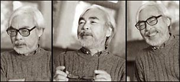

Empecemos por la figura principal: Hayao Miyazaki es un director japonés de películas animadas. La figura más destacada dentro de un género muy amplio y variado: la animación japonesa, el anime. Es muy conocido en Japón y, en los últimos años, algo también en Occidente. Entre el conjunto de su obra (películas, series de TV, historietas gráficas -manga*) se destacan netamente las ocho películas que dirigió dentro del estudio Ghibli; el estudio lo fundó él mismo, en 1984, junto con Isao Takahata.
Takahata, ha sido la otra fuente creativa del estudio, y también dirigió obras importantes, (pre y post Ghibli), compartiendo con su antiguo amigo Miyazaki un concepto particular de la animación, que distingue a la obra del estudio Ghibli de otras productoras occidentales (Disney, por ejemplo), y también del resto del anime.
Miyazaki es muy apreciado por la mayoría de los críticos; "El viaje de Chihiro" (2001) ganó el Oscar a la mejor película animada y gente como John Lasseter (fundador de Pixar), Akira Kurosawa y muchos creativos de Disney y de la animación se cuentan entre sus admiradores. La revista Time lo puso recientemente entre los doce artistas asiáticos más notables de los últimos 60 años.  Director de culto para algunos, sus películas han sido enormemente populares en Japón, y es una referencia en el ambiente del anime; si bien el grueso del consumo de series de TV apunta a otros rumbos, y no todos los otakus* lo prefieren.
Hayao Miyazaki es un persona muy reservada -perfil extremadamente bajo, diríamos-, rehuye la exposición pública y ha concedido pocos reportajes. Tiene fama de ser un trabajador algo obsesivo -y desorganizado-, suele involucrarse en todos los aspectos de la producción: no sólo la dirección, sino el dibujo, la animación y el guión.
Pueden leer detalles de la vida y obra de Miyazaki y de Takata, o consultar un listado sinóptico de todas las películas y series que hicieron.
Lo que sigue intenta dar una visión panorámica de la obra, y del contexto, en formato de preguntas y respuestas.
— Dibujitos japoneses... hummm... Por lo poco que he visto por TV, la gráfica es pobre, y la animación ni hablar. ¿Eso es Miyazaki?
— No. El grueso de la producción de anime dirigida a chicos, en formato de series es en general de baja calidad gráfica (por temas económicos, para empezar). El estudio Ghibli hace largometrajes, para cine, no series. Puede uno hacerse una idea de la calidad gráfica de Ghibli, dándose una vuelta por las galerías de imágenes de Buta Connection.
— Bueno, pero no es sólo la gráfica. Tampoco los temas, el concepto... Los dibujos japoneses, para mí, son una mezcolanza de robots espaciales, chicas "diosas" de ojazos y piernas imposibles, héroes de ceños fruncidos y mechones al viento, acción, violencia... Argumentos y personajes complicados, incomprensibles ... al menos para uno, que se crió con Tom & Jerry y el pato Donald. ¿No es así?
— Más o menos. Por el lado de las temáticas, el anime es un género muy variado. Así, por ejemplo, la temática de los robots (frecuente gigantes, guerreros, en contextos futuristas/espaciales; tipo "Mazinger-Z") fue una moda que tuvo su pico por acá a principios de los '80. Y lo mismo con otras temáticas, rasgos y convenciones. Es difícil determinar características generales al anime. Las series de TV suelen caracterizarse por argumentos complejos y personajes ambivalentes; suele enfatizarse el "desarollo de la personalidad" y las relaciones humanas con sus conflictos (con buena o mala calidad artística; piénsese en las telenovelas latinoamericanas). Muchas características argumentales se deben a que la serie suele ser una versión animada de una historieta gráfica ("manga"), que se publica en entregas.
— ¿Y la obra de Miyazaki es un ejemplo representativo del anime?
— Más o menos. Sí la es en algunos rasgos estilísticos (estilo de dibujo, tipos de argumentos y personajes) que la oponen a -digamos- las películas de Disney. Pero no en otros aspectos: el derroche visual (en parte debido a que se trata de largometrajes; el anime no frecuenta este formato, y menos como primera opción), el amor por la naturaleza, las cosas... y por los personajes. Todo esto es discutible, naturalmente. Pero el hecho es que Miyazaki nunca mostró demasiado interés por el anime como género, y le disgustan muchos de los autores reconocidos y de las convenciones al uso.
— A ver ¿Cuáles serían las referencias del anime? ¿Cómo se compararían con Miyazaki?
— Uf... sería de nunca acabar. Leéte alguna historia del anime...
Osamu Tezuka, el creador de "Astroboy" (~ 1965), suele ser considerado como "el padre del anime".
Después vinieron una tonelada de series, sin que surgieran demasiados creadores con una individualidad propia.
Pocos largometrajes. Más recientemente, hay surgido algunos nombres, de la mano de series y películas más ambiciosas
que el promedio: Hideaki Anno (Evangelion), Mamoru Oshii (Ghost in the Shell), Katsuhiro Otomo (Akira, Steamboy),
Satoshi Kon (Perfect blue, Tokyo godfathers), Shinichiro Watanabe (Cowboy Bebop). Hay para todos los gustos
y opiniones; pero lo cierto es que no existe un análogo al estudio Ghibli, ni ningún otro director tiene
una serie de trabajos continuada de esa relevancia, ni Miyazaki tiene parentesco artístico -ni admiración ni
amistad, según parece- con ninguno de ellos, ni los fans de Miyazaki tenemos coincidencias en gustos con alguno en particular.
Yo, en particular, después de descubrir a Miyazaki salí a pescar en el mar del anime algo remotamente
parecido, y no encontré nada.
— ¿Y cómo se compara con Disney?
— Algunos llaman a Miyazaki "el Disney de Japón". Analogía dudosa. Se parecen en el hecho de haber fundando un estudio con un estilo propio, con una obra consistente y continuada, y que ha llegado a ser el nombre referente de largometraje animado en su país. No son pocas semejanzas, pero tampoco son pocos los contrastes. La forma de trabajar es muy diferente, con mayor protagonismo conceptual del director. La relación artista-público es diferente, y por lo mismo el producto artístico; la obra de Disney (y en general, la animación occidental orientada al público masivo) esta dirigida al consumo infantil, y las películas son comparativamente simples y "estandarizadas", tanto en las tramas argumentales como en los climas, personajes y recursos formales. Muchas personas (yo, sin ir más lejos) que disfrutaban de la obra de Disney, pasan a encontrarla chata, convencional y sosa, después de conocer a Miyazaki.
— ¿Podríamos ubicarlo entonces entres los animadores de elite, de esos artistas innovadores y algo sofisticados, que suelen ser más conocidos por los especialistas que por las masas? ¿Tipos como Yuri Norstein, Frederick Back, Michel Ocelot, Dudok de Wit?...
— Hay algunos puntos de contacto. En particular, Takahata y Miyazaki admiran
a varios de esos, los dos primeros nombrados sobre todo. Pero el cine de Miyazaki
no es, para bien o para mal, de elite. De hecho, su público no sólo es grande,
sino -a lo que parece- también trasversal a la formación cultural: gusta por igual
a cinéfilos sofisticados y a adolescentes ignorantes; y también disgusta -o deja
indiferente, que para el caso es lo mismo- a ambos públicos.
También hay que decir que la obra de Miyazaki no es muy innovadora en lo formal,
sus recursos estilísticos son bien comunes, su dibujo no tiene nada de especialmente
original o reconocible. Su originalidad y su impacto pasan por otro lado.
— ¿Y por dónde pasan? ¿Cuáles serían las virtudes más notables de Miyazaki? ¿"Qué le ven"?
— Eso es complicado de explicar o trasmitir... como en el caso de cualquier artista. Decía un fan en un foro: La obra de Miyazaki y Takahata tiene "algo" que es muy difícil encontrar en otros lugares. Cuesta describirlo, pero creo que tiene algo que ver con la juventud del corazón, con la "honestidad", y con un "respeto obstinado" a la inteligencia de su público.. Público infantil, en primer lugar, hay que agregar. Y también agregaría que ese respeto se ejerce no sólo con "obstinacion" sino también con una completa naturalidad, sin premeditación. Para tener un muestrario más concreto (aunque parcial y personal) de "qué le vemos" a Miyazaki, pueden darse una vuelta por el resto del sitio; que pare eso está.
— ¿Y por el lado más externo? ¿Cuáles son los rasgos más reconocibles a simple vista?
Supongo que, en primer lugar, el preciosimo visual, la belleza abrumadora
de los fondos
sobre todo. Tanto en los paisajes como en los interiores. Es el rasgo más
reconocible en la obra de Ghibli, que la distingue de la mayoría del anime.
El dibujo de los personajes no tiene mucho de particular, sigue las convenciones
del anime (ojos y boca grandes, nariz pequeña), aunque con discreción. La animación
ha ido mejorando con el tiempo (el anime tradicionalmente ha tenido poca calidad,
con menos cuadros por segundo que los habituales en la animación occidental),
ya desde los tiempos de "Kiki" es técnicamente excelente. Es animación "clásica", bidimensional,
personajes dibujados con bordes nítidos sobre fondos estáticos
(nada que ver con Pixar);
el uso de la computación ha ido aumentando, pero no tiene un papel preponderante.
Algunos rasgos propios de Miyazaki son: heroínas femeninas adolescentes, escenas de vuelo,
personajes ambiguos (es raro que haya "malos"); la ambientación es variable,
en tiempo (presente o pasado) y espacio (Japón, Europa o lugares inderminados).
Algún elemento fantástico, en grado variable. Algún poco de humor,
nada de sermones y didactismos, aunque sí algún mensaje
ecologista y pacifista. Amor por los pequeños gestos, morosidad, sensualidad.
Takahata comparte gran parte de estos rasgos, auqnue es algo más naturalista y japonés.
— ¿Son películas dirigidas especialmente a los niños?
Miyazaki ha dicho repetidamente que sí; que su obra está concebida específicamente
para la diversión de los niños; y de su país. Excepto, tal vez, "Porco Rosso".
En mi corta -y argentina- experiencia, en general los niños disfrutan de algunas
(de "Totoro",sobre todo; tal vez también "El castillo de Howl" y "Kiki"),
pero raramente de otras ("Chihiro", "Nausicaa", "Mononoke"). Aunque casi no hay
elementos objetables (algun episodio sobre la menstruación en "Omohide Poro Poro",
y casi nada más por el lado sexual; alguna escena demasiado sangrienta
en "Mononoke", algo chocante en "Chihiro", trágica en "La tumba de
las luciérnagas"), dudo que los niños puedan disfrutar del conjunto de su obra tanto
como algunos adultos.
Como sea, hay que decir que lo que adultos y niños "ven" en una película de Miyazaki
es lo mismo; no se trata de un disfrute paralelo, no se trata de
ese deplorable hábito de muchas producciones occidentales (Shrek) de insertar "gags"
para la diversión de iniciados-adultos que acompañan a los hijos al cine.
— ¿A quiénes le gusta Miyazaki? A mí me gustan A, B, C (inserte nombre de directores, películas, escritores según corresponda) y no me gustan X, Y, Z (id), tengo N años de edad, tal ideología, tal religión... ¿podrías predecir si me va a gustar Miyazaki o no?
Según mi experiencia, no, no se puede. No parece haber un patrón de características del público, ni de correlaciones significativas con otros artistas. Conozco gente con gustos artísticos similares a los míos, a los que Miyazaki deja fríos, y otros que lo aman. Hay que probar. También entre los fans varían las maneras de aficionarse (para algunos es amor a primera vista, otros le toman el gusto de a poco), así como las películas preferidas.
Algunas otras preguntas, más puntuales, acá